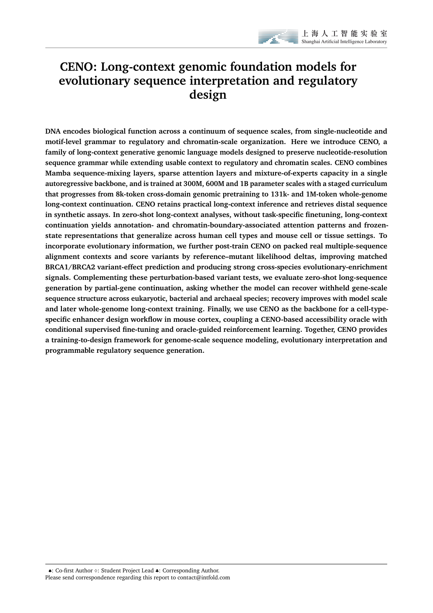

Technical report
One model that reads, scores, and writes DNA at genome scale.
CENO is a genome-scale world model. Instead of building a separate tool for each task, CENO uses one long-context autoregressive model to understand long DNA, score the effect of mutations, and design new regulatory sequences.
The approach
One backbone, three stages: pre-train, evolve, design
A genomic world model keeps nucleotide-level state over very long sequences and exposes one likelihood interface. That single interface is what lets the same model perform four reusable operations over genome sequence space — completion, perturbation, conditioning, and design.
Context length
8k → 1M tokens
8k
131k
1M
-
01
Pre-train
Learn DNA grammar at scale
A hybrid Mamba + sparse-attention + mixture-of-experts backbone is trained at 300M / 600M / 1B parameters, with a staged curriculum from 8k tokens up to 1M-token whole-genome context.
-
02
Evolve
Add evolutionary evidence
Post-training on packed real multiple-sequence alignments lets CENO score reference vs. mutant alleles under shared homologous context — turning likelihood into variant-effect prediction.
-
03
Design
Generate functional DNA
A CENO-based accessibility oracle guides conditional generation and reinforcement learning to design cell-type-specific enhancers in mouse cortex.
CENO at a glance
Stage 01 · Understand
Reading DNA across megabase-scale context
With long-context training, CENO keeps track of distant sequence and — with no task-specific fine-tuning — develops attention that lines up with genome annotations and chromatin boundaries.
Stage 02 · Evolve
Turning likelihood into variant-effect prediction
Post-training on real multiple-sequence alignments lets CENO compare a reference and a mutant allele under the same evolutionary context. The gap in likelihood becomes a direct read-out of variant impact.
Stage 03 · Design
Designing cell-type-specific enhancers
The same model powers generation. A CENO-based accessibility oracle scores candidate sequences, and reinforcement learning steers conditional generation toward enhancers that are active in the target cell type.
Capability
Writing genome-scale sequence
The same pretrained backbone also completes and writes DNA. Withheld-sequence recovery improves with model scale and long-context training, and the 1 Mb context reaches into chromatin-loop and TAD-scale structure — run efficiently on the vLLM inference stack.
Benchmark
Zero-shot variant effects across ten task families
A single pretrained likelihood-delta score is evaluated against roughly fifty published genome models, spanning splice variants, BRCA1/BRCA2, TraitGym, ClinVar, causal eQTLs, expression perturbation, enhancer–gene links, structural variants, molecular fitness, and metabolic pathways.
#1CENO 1B · 1M context
#2CENO 1B · 131k context
Top two of the filtered cross-family ranking, ahead of Evo 2 40B at #3.
- Structural-variant deletions — CENO 1B takes the top three (AVG2 up to 0.633).
- Pathogenic ClinVar SNVs — three CENO 1B checkpoints trail only Evo 2 40B (AUROC to 0.914).
- Causal eQTLs — CENO 1B leads the nearest variant-to-TSS bin (AUROC 0.669).
Compared against
- Evo 2 (7B / 40B)
- Nucleotide Transformer
- Caduceus
- HyenaDNA
- DNABERT
- GENERator
- Genos
- GPN
- Grover
- OmniReg-GPT
Paper & resources
Read the report and cite CENO

Technical report PDF
CENO: A Genome-Scale World Model for Evolutionary Sequence Interpretation and Programmable Regulatory Design
This page hosts the report directly and provides a stable project URL. The released code, model checkpoints, and benchmark artifacts are available through the links below.
Citation
@misc{ceno2026,
title = {CENO: A Genome-Scale World Model for
Evolutionary Sequence Interpretation and
Programmable Regulatory Design},
author = {Ma, Mingqian and Wu, Yucheng and Chen, Xin and Jiang, Feifei and
Lin, Peijun and Ye, Dongxin and Sun, Yidi and Zhang, Yijing and
Shi, Tianqiong and Zhao, Yu and Ouyang, Wanli and Zhou, Bowen and
Bai, Lei and Ren, Yuchen},
year = {2026},
note = {Technical report}
}